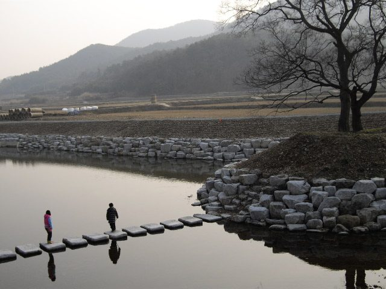

함평 재생에너지 특구 추진위, 정부·국회에 '군민주도형 국가 에너지생산 선도지역' 지정 요구…특별법 등 4대 과제 제시

군 전체를 발전·ESS·송변전·산단을 함께 계획하는 국가전략 공간으로 묶자는 구상…장기 8GW, 입지 기피시설도 받겠다며 11월 16일 서명·건의서 전달 예정, 특구·특화지역·국가산단 모두 요구 단계
함평군 재생에너지 생산기지 특구지정 범군민 추진위원회가 27일 오전 전남광주통합특별시의회 광주청사 대회의실에서 기자회견을 열고, 함평을 '군민주도형 국가 에너지생산 선도지역'으로 지정해 달라고 정부와 국회에 요구했다. 추진위의 구상은 함평군 전체를 하나의 국가전략사업 공간으로 놓고 발전시설과 에너지저장장치(ESS), 송변전시설, 산업단지를 한 계획 안에서 짓자는 것으로, 사업마다 따로 부딪혀 온 주민 수용성과 전력계통 연계 문제를 군 단위에서 한꺼번에 풀자는 취지다. 추진위는 장기적으로 8GW급 재생에너지 생산 기반을 갖추고 ESS와 국가 송변전망을 단계적으로 늘리자고 제안했으며, 정부와 국회에 낼 4대 과제로 ▲생산특구 지정을 위한 특별법 제정 ▲군민주도형 분산에너지 특화지역 지정 ▲RE100 국가산업단지 조성 ▲통합바이오·자원순환시설과 연계한 첨단 농수축산·바이오산업 육성을 꼽았다. 추진위는 군민이 발전사업과 관련 자산에 직접 참여해 수익을 나누는 구조를 사업의 전제 조건으로 내걸었고, 태양광·풍력·양수발전과 국가 송변전시설, 광역 자원회수시설처럼 입지를 잡기 어려운 시설도 받아들이겠다고 밝혔다. 추진위는 지난 22일 시작한 서명운동을 11월 12일까지 이어 군민 90% 이상 참여를 목표로 하고, 11월 3일 함평체육센터에서 '함평대전환 성공 결의대회'를 연 뒤 11월 16일 서명 결과와 특별법 제정 건의서, 국가 메가프로젝트 기본구상을 전남광주통합특별시와 정부, 국회에 전달할 계획이다. 특구와 특화지역, 국가산단은 모두 추진위의 요구 단계로 아직 정해진 것이 없으며, 사업비와 주민 지분 구조도 제시되지 않았다.
시민에너지 관점
송변전시설과 자원회수시설까지 받겠다며 주민이 먼저 손을 든 것은 드문 일이고, 그만큼 그 대가가 무엇으로 돌아오느냐가 이번 요구의 핵심이다. 아일랜드는 정부 재생에너지 경매(RESS)에서 낙찰된 사업자에게 생산 전력 1MWh당 2유로를 지역 공동체 기금으로 내게 하지만, 이런 기금은 사업자가 나눠 주는 몫일 뿐 주민이 발전소의 주인이 되는 것은 아니다. 8GW 같은 규모를 주민 돈으로 감당할 수 없다는 우려가 나올 수 있으나, 처음부터 전부를 주민이 가질 필요는 없고 군 단위 계획 안에서 주민 지분의 하한을 정해 두면 사업이 커질수록 군민의 자산도 함께 커진다. 특별법을 요구한다면 기피시설을 받는 지역 주민의 지분 하한과 우선 참여 순서를 법안 앞머리에 적어 넣으라고 함께 요구해야 한다.
출처: 스마트비즈 2026-10-27 황태호 원문 보기
咸平・再生エネ特区推進委、政府・国会に郡民主導型の国家エネルギー生産先導地域の指定を要求…特別法など4大課題を提示
郡全体を発電・ESS・送変電・産業団地を一体で計画する国家戦略空間にまとめる構想…長期で8GW、立地が難しい施設も受け入れるとし11月16日に署名・建議書を提出予定、特区・特化地域・国家産業団地はいずれも要求段階
全羅南道咸平郡の「咸平郡再生可能エネルギー生産基地特区指定汎郡民推進委員会」は27日午前、全南光州統合特別市議会の光州庁舎大会議室で記者会見を開き、咸平を「郡民主導型の国家エネルギー生産先導地域」に指定するよう政府と国会に求めた。推進委の構想は、咸平郡全体を一つの国家戦略事業空間と位置づけ、発電施設とエネルギー貯蔵装置（ESS）、送変電施設、産業団地を一つの計画の中で整備するもので、事業ごとに個別にぶつかってきた住民の受容性と電力系統への接続の問題を郡単位でまとめて解決しようという趣旨だ。推進委は長期的に8GW級の再生可能エネルギー生産基盤を整え、ESSと国の送変電網を段階的に拡充することを提案し、政府と国会に求める4大課題として、▲生産特区指定のための特別法制定 ▲郡民主導型の分散エネルギー特化地域の指定 ▲RE100国家産業団地の造成 ▲統合バイオ・資源循環施設と連携した先端農水畜産・バイオ産業の育成を挙げた。推進委は、郡民が発電事業と関連資産に直接参加して収益を分け合う仕組みを事業の前提条件とし、太陽光・風力・揚水発電や国の送変電施設、広域の資源回収施設のように立地の決まりにくい施設も受け入れる考えを示した。推進委は22日に始めた署名運動を11月12日まで続けて郡民の90%以上の参加を目指し、11月3日に咸平体育センターで「咸平大転換成功決起大会」を開いたうえで、11月16日に署名結果と特別法制定の建議書、国家メガプロジェクトの基本構想を全南光州統合特別市と政府、国会に届ける計画だ。特区や特化地域、国家産業団地はいずれも推進委の要求段階で、まだ何も決まっておらず、事業費や住民の持ち分の構造も示されていない。
市民エネルギーの視点
送変電施設や資源回収施設まで受け入れると住民の側から手を挙げるのは珍しく、それだけに見返りが何の形で戻ってくるかが今回の要求の核心だ。アイルランドは政府の再生可能エネルギー入札（RESS）で落札した事業者に、発電量1MWhあたり2ユーロを地域コミュニティ基金に拠出させているが、こうした基金は事業者が分け与える取り分にすぎず、住民が発電所の持ち主になるわけではない。8GWという規模を住民の資金でまかなえるのかという懸念も出るだろうが、初めからすべてを住民が持つ必要はなく、郡単位の計画の中で住民持ち分の下限を決めておけば、事業が大きくなるほど郡民の資産も大きくなる。特別法を求めるのであれば、施設を受け入れる地域住民の持ち分の下限と優先参加の順番を法案の冒頭に書き込むよう、あわせて要求すべきだ。
出典: スマートビズ（SmartBiz） 2026-10-27 ファン・テホ 原文を読む
咸平可再生能源特区推进委要求政府和国会指定其为郡民主导型国家能源生产先导地区…提出特别法等四大课题
设想把全郡作为统一规划发电、储能、输变电和产业园的国家战略空间…长期目标8GW，表示愿意接纳选址困难的设施，计划11月16日递交签名和建议书，特区、特化地区和国家产业园均处于诉求阶段
韩国全罗南道咸平郡的“咸平郡可再生能源生产基地特区指定全郡民推进委员会”27日上午在全南光州统合特别市议会光州厅舍大会议室召开记者会，要求政府和国会把咸平指定为“郡民主导型国家能源生产先导地区”。推进委的设想是把咸平郡全境作为一个国家战略事业空间，在同一个规划中建设发电设施、储能系统（ESS）、输变电设施和产业园区，把过去每个项目各自遇到的居民接受度和电网接入问题放到郡一级统一解决。推进委提议长期建成8GW级可再生能源生产基础，并分阶段扩充ESS和国家输变电网，同时提出向政府和国会提交的四大课题：▲制定指定生产特区的特别法 ▲指定郡民主导型分布式能源特化地区 ▲建设RE100国家产业园区 ▲培育与综合生物·资源循环设施相衔接的尖端农水畜产和生物产业。推进委把郡民直接参与发电项目及相关资产并分享收益的结构列为项目的前提条件，并表示愿意接纳太阳能、风电、抽水蓄能发电以及国家输变电设施、广域资源回收设施等难以选址的设施。推进委计划把22日开始的签名运动持续到11月12日，目标是90%以上郡民参与，11月3日在咸平体育中心举行“咸平大转型成功誓师大会”，11月16日把签名结果、特别法制定建议书和国家大型项目基本构想递交给全南光州统合特别市、政府和国会。特区、特化地区和国家产业园都还只是推进委的诉求，尚无任何定论，项目费用和居民持股结构也没有公布。
市民能源视角
居民主动表示连输变电设施和资源回收设施都愿意接纳，这并不多见，正因如此，接纳之后换回什么才是这次诉求的核心。爱尔兰规定在政府可再生能源竞拍（RESS）中中标的开发商，每发电1MWh要向社区基金缴纳2欧元，但这种基金只是开发商分出的一份，并不能让居民成为发电站的主人。有人会担心8GW这样的规模不是居民的钱能承担的，但居民不必一开始就拥有全部，只要在郡一级规划中定下居民持股的下限，项目越大，郡民的资产也会随之越大。既然要求制定特别法，就应同时要求把接纳设施地区居民的持股下限和优先参与顺序写进法案的开头。
来源: SmartBiz 2026-10-27 Hwang Tae-ho 查看原文
Hampyeong renewable zone campaign asks government and National Assembly to designate the county a resident-led national energy production leader zone, sets out four demands including a special act
The plan would treat the whole county as one national strategic space planning generation, storage, transmission and an industrial park together; it targets 8GW in the long run, offers to host hard-to-site facilities and plans to deliver signatures and a petition on Nov. 16, while the zone, special district and national industrial park all remain demands
A residents' committee campaigning for a renewable energy production zone in Hampyeong County, South Jeolla, held a press conference on the morning of October 27 in a conference room at the Gwangju building of the Jeonnam-Gwangju Integrated Special City Council, calling on the government and the National Assembly to designate Hampyeong a "resident-led national energy production leader zone." The committee's plan would treat the entire county as a single national strategic project area and plan power plants, energy storage systems (ESS), transmission and substation facilities and industrial complexes together, so that local acceptance and grid connection, issues that individual projects have fought over one by one, could be settled at the county level. It proposed building an 8GW-class renewable generation base over the long term while expanding ESS and the national transmission network in stages, and listed four demands for the government and the legislature: a special act to designate the production zone, designation of a resident-led distributed energy special district, creation of an RE100 national industrial complex, and development of advanced agriculture, fisheries, livestock and bio industries linked to integrated bio and resource recycling facilities. The committee made a structure in which residents directly invest in generation projects and related assets and share the returns a precondition, and said Hampyeong would accept facilities that are hard to site, such as solar, wind and pumped-storage plants, national transmission and substation facilities and regional resource recovery plants. It aims to collect signatures from more than 90% of residents in a campaign that began on October 22 and runs until November 12, will hold a rally for the county's transformation at the Hampyeong sports center on November 3, and plans to deliver the signatures, a petition for the special act and a basic concept for a national megaproject to the integrated special city, the government and the National Assembly on November 16. The zone, the special district and the national industrial complex are all still demands from the committee, nothing has been decided, and no project costs or resident ownership structure have been presented.
Citizen Energy View
It is rare for residents to volunteer to host transmission lines and waste recovery plants, which is exactly why what they get in return is the heart of this demand. Ireland requires developers that win its government renewable auctions (RESS) to pay 2 euros for every MWh they generate into a community benefit fund, but such a fund is a share handed out by the developer, not ownership of the plant by residents. Some will doubt that residents could ever finance something on the scale of 8GW, but they do not need to own it all from day one: if a minimum resident stake is fixed within the county-wide plan, residents' assets grow as the projects grow. If Hampyeong is asking for a special act, it should also demand that a minimum ownership share and priority participation for residents of host communities be written into the opening articles of the bill.
Source: SmartBiz 2026-10-27 Hwang Tae-ho Read the original